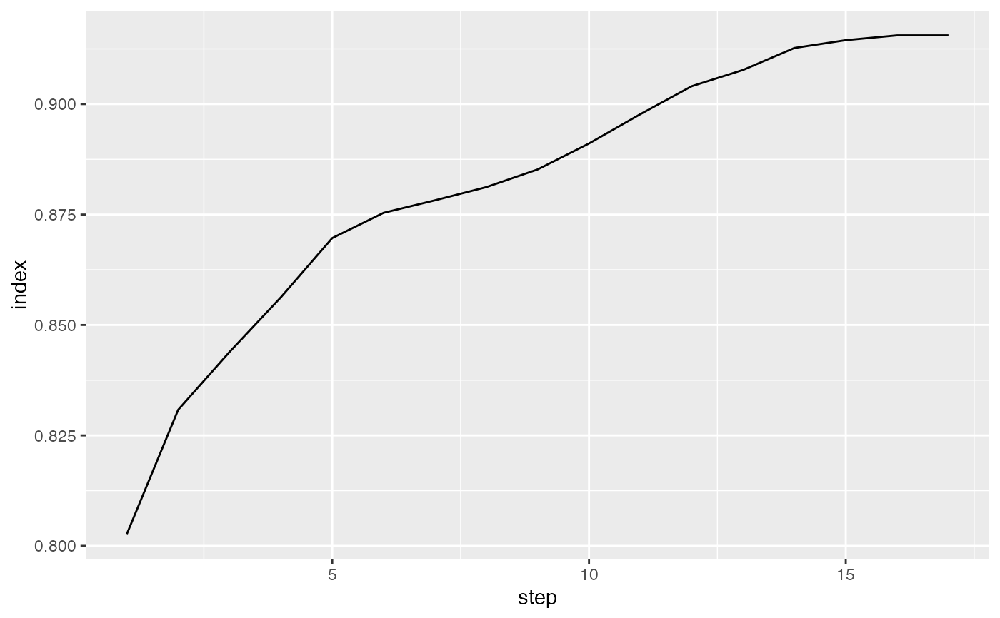
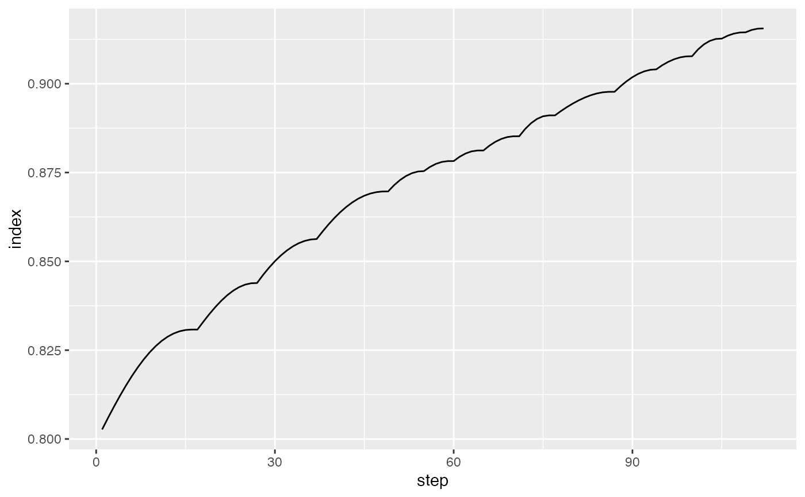

Compute index values for a tour history.
Usage
path_index(history, index_f, data = attr(history, "data"))Arguments
- history
list of bases produced by
save_history(or otherwise)- index_f
index function to apply to each basis
- data
dataset to be projected on to bases
See also
save_history for options to save history
Examples
fl_holes <- save_history(flea[, 1:6], guided_tour(holes()), sphere = TRUE)
#> Converting input data to the required matrix format.
#> Target: 0.831, 3.5% better
#> Target: 0.844, 1.6% better
#> Target: 0.856, 1.5% better
#> Target: 0.870, 1.6% better
#> Target: 0.875, 0.7% better
#> Target: 0.878, 0.3% better
#> Target: 0.881, 0.3% better
#> Target: 0.885, 0.5% better
#> Target: 0.891, 0.7% better
#> Target: 0.898, 0.7% better
#> Target: 0.904, 0.7% better
#> Target: 0.908, 0.4% better
#> Target: 0.913, 0.5% better
#> Target: 0.914, 0.2% better
#> Target: 0.916, 0.1% better
#> No better bases found after 25 tries. Giving up.
#> Final projection:
#> 0.215 -0.186
#> -0.622 0.573
#> -0.242 -0.704
#> 0.312 0.203
#> -0.575 -0.311
#> 0.282 -0.055
path_index(fl_holes, holes())
#> [1] 0.8026813 0.8308022 0.8439039 0.8562774 0.8696779 0.8753976 0.8782242
#> [8] 0.8812095 0.8852121 0.8910866 0.8977194 0.9040449 0.9077344 0.9127040
#> [15] 0.9144717 0.9155597 0.9155597
#> attr(,"class")
#> [1] "path_index"
## path_index(fl_holes, cmass())
plot(path_index(fl_holes, holes()), type = "l")

## plot(path_index(fl_holes, cmass()), type = "l")
# \donttest{
# Use interpolate to show all intermediate bases as well
hi <- path_index(interpolate(fl_holes), holes())
hi
#> [1] 0.8026813 0.8059605 0.8091322 0.8121673 0.8150387 0.8177216 0.8201932
#> [8] 0.8224336 0.8244256 0.8261553 0.8276128 0.8287922 0.8296928 0.8303195
#> [15] 0.8306833 0.8308022 0.8308022 0.8330326 0.8351581 0.8371325 0.8389134
#> [22] 0.8404637 0.8417518 0.8427529 0.8434490 0.8438289 0.8439039 0.8461510
#> [29] 0.8481996 0.8500390 0.8516592 0.8530502 0.8542028 0.8551084 0.8557596
#> [36] 0.8561505 0.8562774 0.8584042 0.8603986 0.8622351 0.8638925 0.8653545
#> [43] 0.8666097 0.8676507 0.8684745 0.8690815 0.8694748 0.8696602 0.8696779
#> [50] 0.8714325 0.8728865 0.8740211 0.8748223 0.8752806 0.8753976 0.8765548
#> [57] 0.8774196 0.8779766 0.8782152 0.8782242 0.8794430 0.8803620 0.8809558
#> [64] 0.8812031 0.8812095 0.8825651 0.8836551 0.8844646 0.8849830 0.8852038
#> [71] 0.8852121 0.8872713 0.8889084 0.8901007 0.8908306 0.8910863 0.8910866
#> [78] 0.8923008 0.8934140 0.8944238 0.8953241 0.8961047 0.8967519 0.8972490
#> [85] 0.8975771 0.8977161 0.8977194 0.8992853 0.9006696 0.9018484 0.9027981
#> [92] 0.9034953 0.9039174 0.9040449 0.9051961 0.9061499 0.9068927 0.9074103
#> [99] 0.9076885 0.9077344 0.9096347 0.9110811 0.9120697 0.9126013 0.9127040
#> [106] 0.9135252 0.9140948 0.9144081 0.9144717 0.9151345 0.9154897 0.9155597
#> attr(,"class")
#> [1] "path_index"
plot(hi)

# }